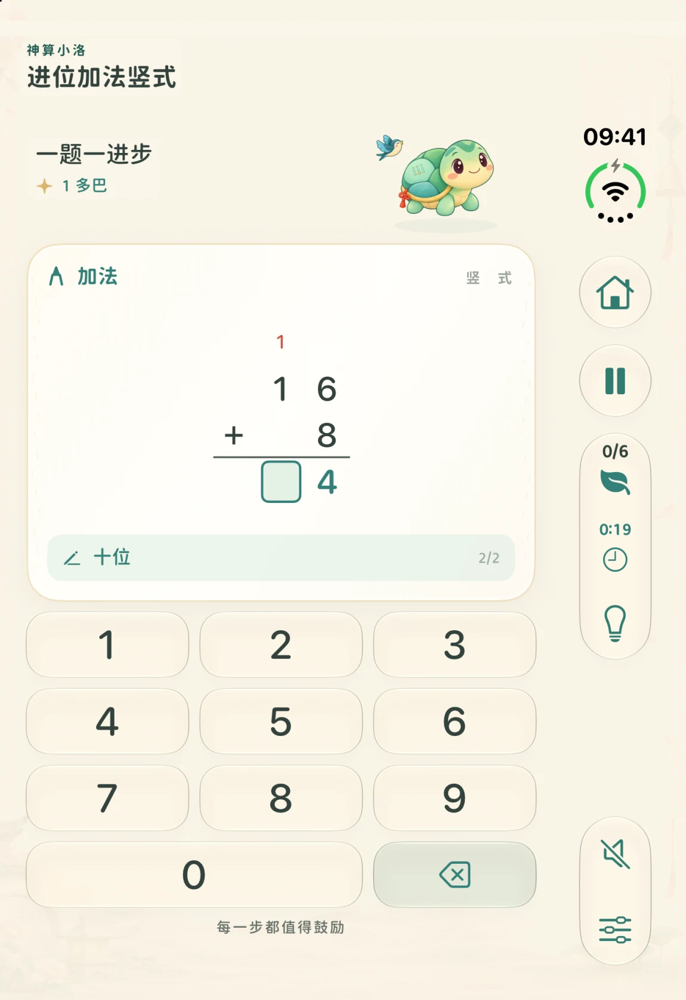
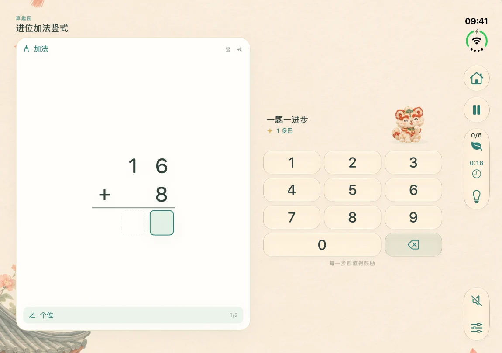

一至三年级
免费下载与练习
练习数的分合、整数加减乘除与基础分数。错题和进度会留在这台设备上。
在 iPhone Duo 上，折叠时的右侧栏可以暂停、看进度和查看提示。展开后题纸和键盘随屏幕重新排布，刚填的数字仍在原位。


58 项计算技能按先修关系衔接。参考年级帮助选起点，各地教材的教学顺序可能不同。
免费下载与练习
练习数的分合、整数加减乘除与基础分数。错题和进度会留在这台设备上。
US$2.99 · 一次购买
解锁高年级计算内容，包括多位数运算、小数、分数运算、比与百分数。各地区实际价格以 App Store 显示为准。